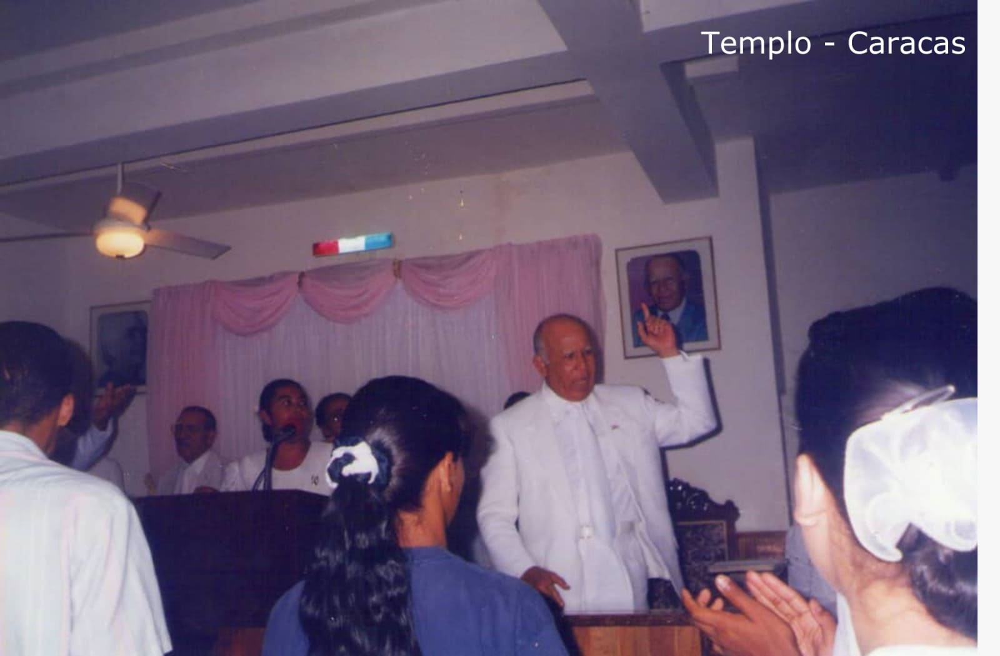

The Work of Mita arrived in Venezuela in 1982. In the 1950s, the Holy Spirit of God, through the mouth of Juanita García Peraza, told Aarón: "Let's go to Caracas." This prophecy was fulfilled in 1981, when the Venezuelan Indalecia de Rivero traveled to Puerto Rico. During her stay on the island, she takes a taxi and tells the driver that she wants to go to a restaurant where she can eat healthy and delicious food. The driver was José Reyes, a member of the Congregation, and he proceeds to take her to the Duarte Restaurant, located in the vicinity of the Mita temple.
While she was having lunch, Indalecia drowned as a result of her esophageal cancer. The brothers who were there informed Aarón —who was near the restaurant— about the situation, and he went to the place and prayed to her. Indalecia was able to overcome her drowning and she, too, was confirmed later, that was healed of that cancer. Aarón, seeing the situation, talk to her about The Church of Mita and invites her to attend a religious service. He tells her that in Venezuela, in the Catia La Mar area, there lived a Dominican couple, Calixta Cruceta and Manuel Rosario, whom she could contact to learn more about the Congregation. She agrees to Aaron's invitation, she comes to the service that night and converts. Aarón sent with her a letter addressed to the brothers Calixta and Manuel where he asked them if it was possible for them to receive the workers (pastors) from Puerto Rico in their home, in order to begin preaching in those lands. Calixta and her husband agreed to this beautiful request.
Months later, Mrs. Carmen Gómez, who lived in the city of Valencia, travels to Puerto Rico with Cecilia Mendoza and Otilia. They take a taxi and ask the driver about recommendations for tourist places and churches that they could visit. The driver, who was a member of the Mita Congregation, invites them to a service. That night they also had their conversion. Cecilia Mendoza was so amazed that she returned to Puerto Rico and tells Aarón that she wishes the Church could reach the city of Valencia, Venezuela.
On March 6, 1982, Aarón sent the first workers (Amador Laureano, Ismael Soto and Ángel “Noro” Narváez) to Venezuelan lands. They establish congregations in Catia La Mar and in Caracas.
In August 1982, Aarón and a group of brothers from Puerto Rico arrived in Venezuela for the first time. They carry out three religious services: in the Plaza Bolívar de Catia La Mar, in a meeting room of building No. 56 in Caracas and in the city of Valencia, in the Los Guayos and Isabelica sectors. There were many needy people who accepted the message of God's Holy Spirit through the mouth of Aarón.

On March 30, 1989, Aarón inaugurated the Caracas temple. On February 6, 1990, he sent the first musical instruments to Caracas to form a band; Likewise, he sends Sarita Calderón to give music classes.
There are hundreds of Venezuelans who have accepted the Work of Mita and testify that they have received the Lord.
At the end of 1982, Consuelo Mora de Villamizar was very ill with cancer of the womb. A cousin named Norma García tells her that there is a church that have arrived from Puerto Rico, where great miracles and healings occurred. Consuelo, despite having many doubts, was able to see a light of hope and she decided to visit that church. The worker Ángel “Noro” Narváez explains the message of the Church of Mita to her, invites her to stay at the service that Thursday and urges her to be there on Saturday so that she can talk to Aarón on the phone. That Saturday, Consuelo and her two sons, Omar, and Julio Villamizar, had the opportunity to speak with Aarón by phone. Turning to Consuelo, Aarón told her: "You are going to be healed of that cancer" and proceeded to pray to her. The word of the prophet of God was fulfilled and both Consuelo and many members of her family joined the Congregation.